Установка Zoneminder
Пример установки на ОС Ubuntu 10.04.4 LTS под архитектуру AMD64.
Установку системы производим в минимальной конфигурации: без дополнительных сервисов (кроме ssh сервера), графической оболочки и др. дополнительных пакетов. Языковые настройки можно выбрать русские (страна Россия, язык русский и пр.).
После установки системы обновим репозитарий системы:
$ sudo apt-get update
После этого приступим к установке Zoneminder:
$ sudo apt-get install zoneminder
$ sudo ln -s /etc/zm/apache.conf /etc/apache2/conf.d/zoneminder.conf
$ sudo /etc/init.d/apache2 force-reload (перезапускаем Apache)
$ sudo mysql -u root -p < /usr/share/zoneminder/db/zm_create.sql
mysql -u root -p (это позволит войти в командную строку mysql), затем вводим:
> grant select,insert,update,delete on zm.* to 'zmuser'@localhost identified by 'zmpass';
> flush privileges;
> quit (или Ctrl+В, или \q – выходим из mysql)
Далее:
$ sudo chmod 4755 /usr/bin/zmfix
$ zmfix -a
$ sudo adduser www-data video
$ sudo vi /etc/sysctl.conf
(редактируем sysctl.conf, добавляем две строки в конец файла; для входа в режим редактирования нажимаем I, для выхода - Esc, сохранение - Shift+ZZ)
> kernel.shmall = 134217728
> kernel.shmmax = 134217728
Сохраняем файл и перегружаем систему. После перезагрузки можем войти в веб-интерфейс системы наблюдения:
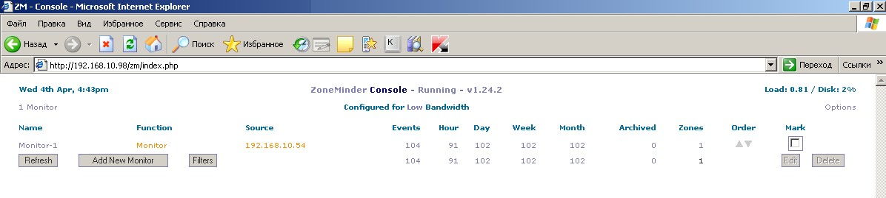
Настройка Zoneminder
После запуска интерфейса программы имеет смысл посетить раздел настроек Zoneminder (“Options” в правом углу). Интерес может представлять включение аутентификации, русификации интерфейса, включение поддержки поворотных камер и пр. Каждая настройка снабжена небольшим описанием, что позволяет оценить ее ценность лично для вас. Для примера включим поддержку поворотных камер:
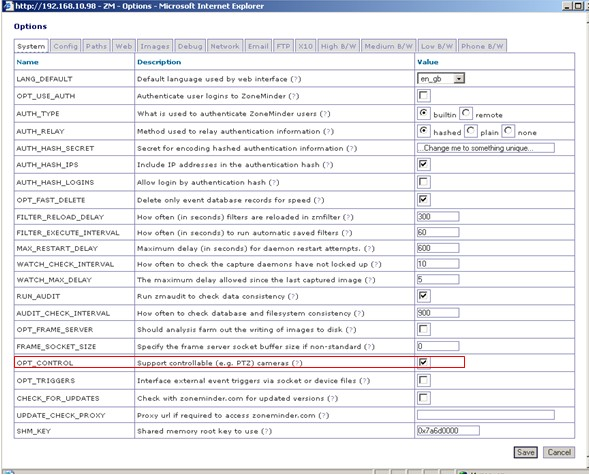
После предварительной настройки сервиса приступим к добавлению камер. Нажимаем “Add new monitor” и прописываем следующие параметры:
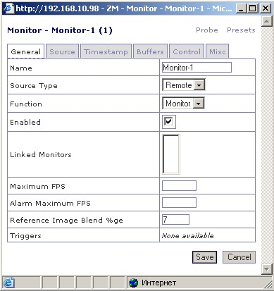
Вкладка “Source“:
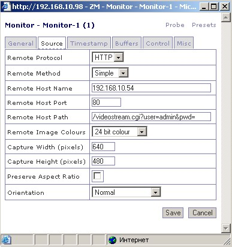
Самая «загадочная» строка на данной вкладке – “Remote Host Path” – путь к «сырым» изображениям с камеры. У каждого производителя он свой. Хорошая база данных по камерам и путям к изображению представлена здесь - http://www.ispyconnect.com/sources.aspx. Из остальных вкладок нас будет интересовать вкладка “Control”:
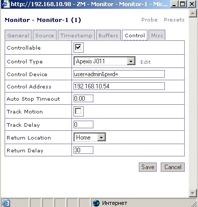
Если камера является поворотной (функция PTZ), например Apexis APM-J011-WS, то функциями поворота можно управлять через Zoneminder, посредством скрипта, отправляющего команды на камеру.
Рассмотрим подробнее особенности настройки. В первую очередь нужно создать скрипт, который будет управлять камерой. Для оборудования Apexis он выложен по адресу: http://www.lecam.ru/ip-cams/APM-J011-WS/ApexisJ011.pm. Копируем скрипт к остальным файлам управления Zoneminder:
/usr/share/perl5/ZoneMinder/Control/
В различных ОС путь к файлу может быть иным. Для поиска нужного места ищем по имени файла: PanasonicIP.pm После процесса копирования скрипта требуется его подключить к камере через веб-интерфейс Zoneminder. На вкладке “Control” выбираем ссылку “Edit”:
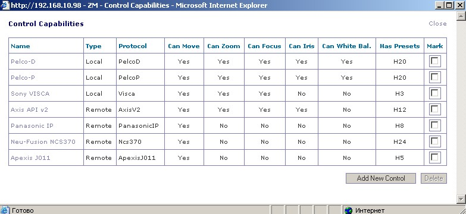
Далее выбираем “Add New Control”:
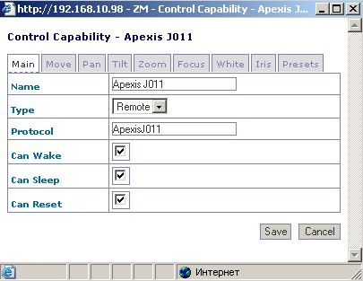
В поле “Name” указываем произвольное название для скрипта управления. В качестве “Type” указываем “Remote”, а вот в поле “Protocol” нужно указать точное название скрипта, который мы сохранили без указания расширения. Следующие вкладки заполняем следующим образом:
|
Move
|
Pan
|
Tilt
|
|
Presets
|
Zoom: Камера не имеет зума |
После заполнения всех полей сохраняем полученную настройку и выбираем ее в качестве основной на вкладке “Control” у настраиваемой камеры.
После сохранения настроек камеры можем полюбоваться на результаты:
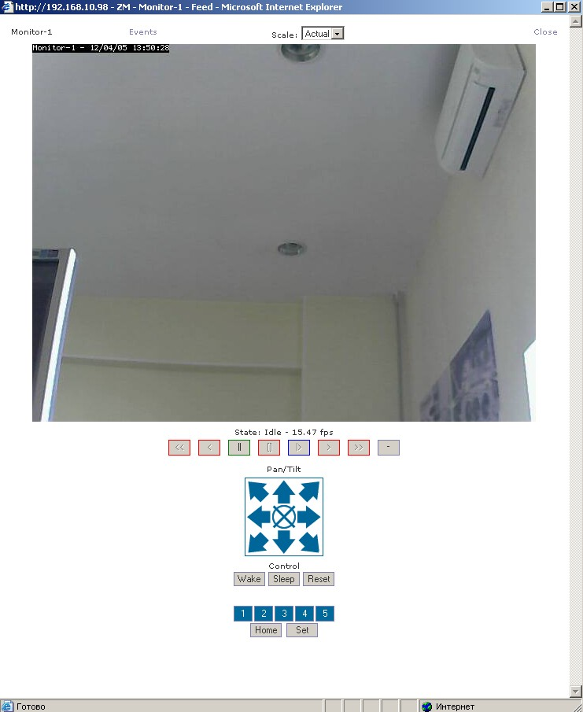
Рассмотрим теперь режимы работы камеры в Zoneminder.
Для просмотра записанных событий, будь то детекция движения или непрерывная запись, используем ссылку с именем камеры в первой колонке Zoneminder – “Name”. Должны увидеть нечто подобное:
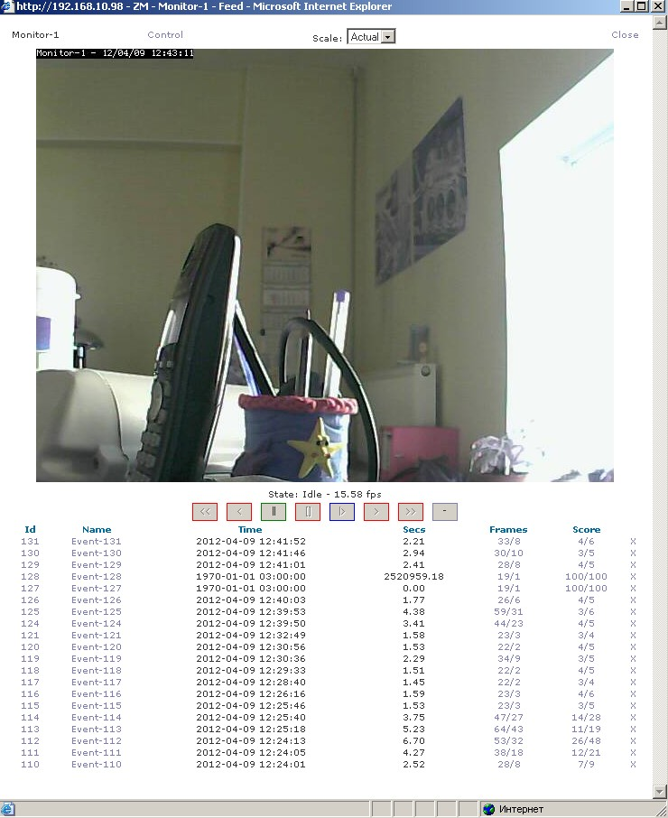
В нижней части окна можем наблюдать список событий, зарегистрированных детектором движения. Если камера управляемая, то при нажатии ссылки “Control” вместо событий появятся элементы управления:
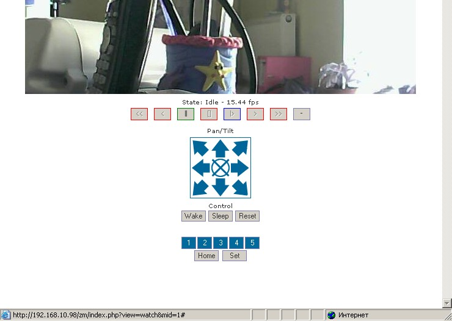
По умолчанию зоной детекции движения является вся область, отображаемая камерой. В этот порядок вещей можно вмешаться и создать несколько зон детекции движения или ограничить зону необходимой областью. Настраиваются зоны в разделе “Zones”:
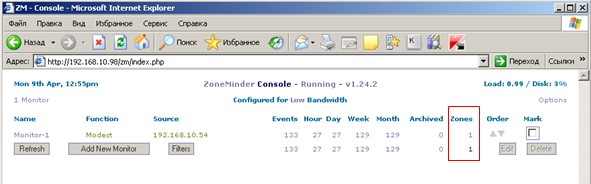
После перехода по ссылке нужной зоны имеем следующее изображение:
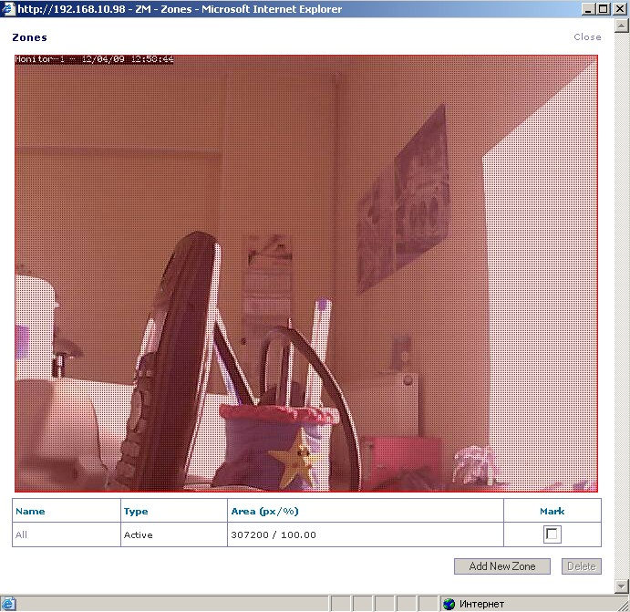
Далее нажимаем “Add New Zone”:
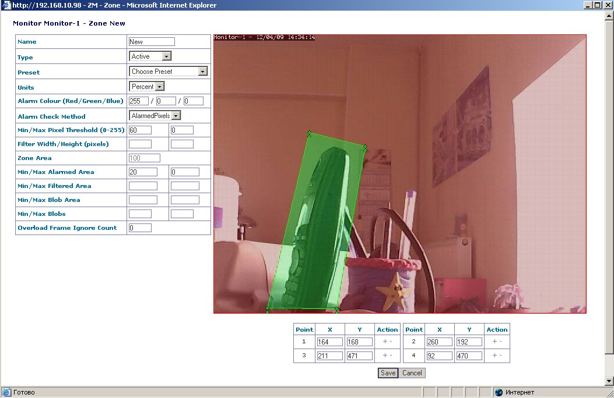
Здесь вы можете выбрать активные зоны, в которых будет отслеживаться движение, а также исключить неактуальные участки. За более подробной информацией по специфическим настройкам можно обратиться к руководству Zoneminder - http://www.zoneminder.com/wiki/index.php/Zone_Parameter_Explanations.
В заключение напомним еще раз, как производить просмотр записанного материала. Самый простой путь – обратиться по ссылке с именем требуемой камеры в столбце “Name”, либо по столбцу “Events” напротив нужной камеры. После этого выбираем событие и наблюдаем видеозапись.
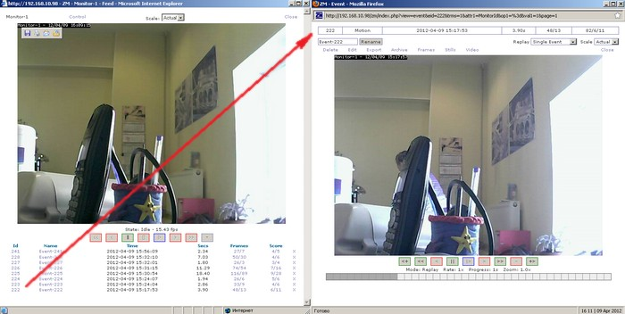